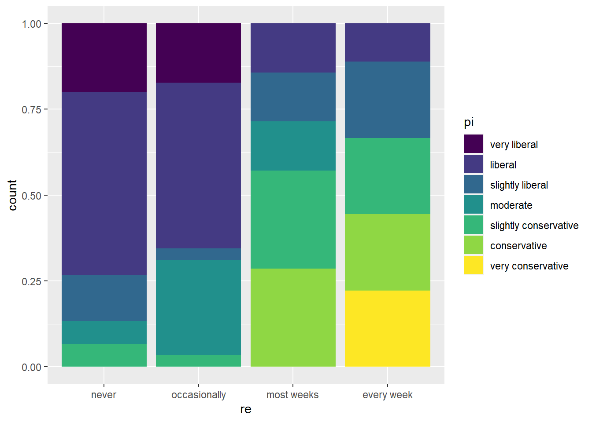
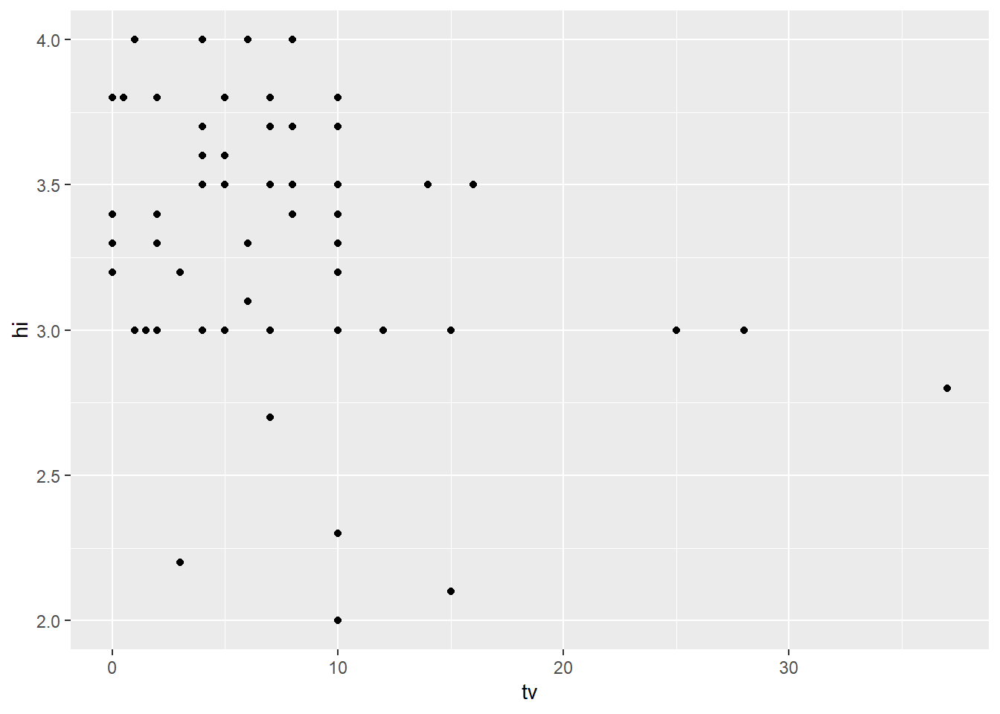

Warning: package 'alr4' was built under R version 4.2.3
Loading required package: car
Warning: package 'car' was built under R version 4.2.3
Loading required package: carData
Warning: package 'carData' was built under R version 4.2.3
Loading required package: effects
Warning: package 'effects' was built under R version 4.2.3
lattice theme set by effectsTheme()
See ?effectsTheme for details.
Code
library(smss)
Warning: package 'smss' was built under R version 4.2.3
Code
library(ggplot2)library(stargazer)
Please cite as:
Hlavac, Marek (2022). stargazer: Well-Formatted Regression and Summary Statistics Tables.
R package version 5.2.3. https://CRAN.R-project.org/package=stargazer
Load data
Code
data(UN11)
Question 1
(a)
The independent variable is the Gross Domestic Product (GDP) per person, commonly referred to as GDP per capita. This variable serves as the predictor in the analysis. The dependent variable, or the response, is the birth rate per 1000 women, also known as fertility.
(b)
Code
ggplot(data = UN11, aes(x = ppgdp, y = fertility)) +geom_point()
To adequately model the relationship between the two variables, a linear regression line would not be suitable as the data displays an L-shaped structure (or the left half of a U-shape). This implies that a more complex model would be needed to capture the true nature of the relationship between the variables.
(c)
Code
ggplot(data = UN11, aes(x =log(ppgdp), y =log(fertility))) +geom_point()
Given the nature of the data, a simple linear regression model appears to be appropriate. It is feasible to visualize a negatively-sloped straight line that can be fitted to the points in the scatter plot, which can serve as a preliminary model for the relationship between the two variables.
Question 2
(a)
To convert the values of the response variable from US dollars (USD) to British pounds (GBP), it is essential to take into account that the numerical value of the response variable will be reduced by a factor of 1.33. As a result, the slope of the regression line would also need to be adjusted by dividing it by 1.33, in order to ensure that the model accurately reflects the relationship between the variables under the new currency.
(b)
The correlation coefficient between the two variables is a standardized measure that is not affected by the unit of measurement. Therefore, converting the values from US dollars to British pounds will not have an impact on the correlation coefficient between the two variables. The correlation will remain the same as before the conversion, as it is solely based on the strength and direction of the relationship between the variables, regardless of the unit of measurement used.
Question 3
Code
data(water)pairs(water)
Upon analysis, it appears that the variable “Year” is not significantly correlated with any of the other variables in the dataset.
On the other hand, the three variables that begin with the letter “O” seem to exhibit a strong correlation with each other. In other words, when any two of these variables are plotted against each other, they demonstrate a more pronounced level of interdependence compared to their relationship with the other variables in the dataset. Similarly, the three variables that start with the letter “A” also appear to form another group that is highly correlated.
Additionally, it can be observed that the variable BSAAM has a closer relationship with the “O” variables rather than the “A” variables, implying a stronger correlation between these variables.
There is a remarkably strong correlation between the variables “quality,” “clarity,” and “helpfulness” in the data set. This suggests that these variables are closely related to each other, with any two of these variables exhibiting a high level of interdependence. Moreover, the variable “easiness” also displays a fairly high correlation with the other three variables.
The variable “raterInterest” is also moderately correlated with the other variables, although it is noteworthy that raters generally tend to indicate at least moderate interest in the subject matter. Taken together, these findings may indicate that individuals may not differentiate between these various dimensions very effectively, or that professors who perform well in one dimension may also perform well in the others.
Question 5
(a)
A potential method of visually depicting the correlation between religiosity and political ideology is to use a bar graph. In this representation, as the bars move towards the right side of the graph, indicating higher levels of religiosity, lighter colors start to appear, indicating a greater degree of conservatism in political ideology. It is worth noting that there are alternative visualizations that could be utilized to depict this relationship, but this is one possible approach that could be used to highlight the connection between these two variables.
Code
data(student.survey)ggplot(data = student.survey, aes(x = re, fill = pi)) +geom_bar(position ="fill")

A scatter plot is a useful tool to visually demonstrate the correlation between two variables, and can be used to depict the relationship between high school GPA and hours of watching TV in this case. By plotting the hours of watching TV on the x-axis and the high school GPA on the y-axis, a scatter plot can be generated that will enable us to observe the pattern of the relationship between these two variables. Therefore, a scatter plot is a suitable choice to represent the connection between high school GPA and hours of watching TV.
Code
ggplot(data = student.survey, aes(x = tv, y = hi)) +geom_point()

(b)
Handling ordinal variables in linear regression can be a challenging task. However, in this particular case, we can simplify the process by converting ordinal variables such as political ideology and religiosity into numerical values, and subsequently include them in our analysis. It is worth noting that this is a common approach for dealing with ordinal variables in regression analysis. The high school GPA and hours of TV variables are already continuous, and thus do not require any additional conversion
Code
m1 <-lm(as.numeric(pi) ~as.numeric(re), data = student.survey)m2 <-lm(hi ~ tv, data = student.survey)stargazer(m1, m2, type ='text', dep.var.labels =c('Pol. Ideology', 'HS GPA'), covariate.labels =c('Religiosity', 'Hours of TV'))
The statistical analysis has revealed that there is a significant positive correlation (at the 0.01 significance level) between religiosity and conservatism. In other words, as the level of religiosity increases, conservatism tends to increase as well.
Furthermore, the analysis has also uncovered a significant negative correlation (at the 0.05 significance level) between hours of TV and high school GPA. Specifically, it has been determined that each additional hour of TV watched per week is associated with a decline of 0.018 in high school GPA. This finding suggests that watching excessive amounts of TV may have a detrimental effect on academic performance in high school.
Source Code
---title: "Homework - 3"author: "Thrishul"description: "Homework 3"date: "02/05/2023"format: html: toc: true code-fold: true code-copy: true code-tools: truecategories: - hw2 - desriptive statistics - probability---# Load the necessary packages```{r}library(alr4)library(smss)library(ggplot2)library(stargazer)```## Load data```{r}data(UN11)```# Question 1## (a)The independent variable is the Gross Domestic Product (GDP) per person, commonly referred to as GDP per capita. This variable serves as the predictor in the analysis. The dependent variable, or the response, is the birth rate per 1000 women, also known as fertility.## (b)```{r}ggplot(data = UN11, aes(x = ppgdp, y = fertility)) +geom_point()```To adequately model the relationship between the two variables, a linear regression line would not be suitable as the data displays an L-shaped structure (or the left half of a U-shape). This implies that a more complex model would be needed to capture the true nature of the relationship between the variables.## (c)```{r}ggplot(data = UN11, aes(x =log(ppgdp), y =log(fertility))) +geom_point()```Given the nature of the data, a simple linear regression model appears to be appropriate. It is feasible to visualize a negatively-sloped straight line that can be fitted to the points in the scatter plot, which can serve as a preliminary model for the relationship between the two variables.# Question 2## (a)To convert the values of the response variable from US dollars (USD) to British pounds (GBP), it is essential to take into account that the numerical value of the response variable will be reduced by a factor of 1.33. As a result, the slope of the regression line would also need to be adjusted by dividing it by 1.33, in order to ensure that the model accurately reflects the relationship between the variables under the new currency.## (b)The correlation coefficient between the two variables is a standardized measure that is not affected by the unit of measurement. Therefore, converting the values from US dollars to British pounds will not have an impact on the correlation coefficient between the two variables. The correlation will remain the same as before the conversion, as it is solely based on the strength and direction of the relationship between the variables, regardless of the unit of measurement used.# Question 3```{r}data(water)pairs(water)```Upon analysis, it appears that the variable "Year" is not significantly correlated with any of the other variables in the dataset.On the other hand, the three variables that begin with the letter "O" seem to exhibit a strong correlation with each other. In other words, when any two of these variables are plotted against each other, they demonstrate a more pronounced level of interdependence compared to their relationship with the other variables in the dataset. Similarly, the three variables that start with the letter "A" also appear to form another group that is highly correlated.Additionally, it can be observed that the variable BSAAM has a closer relationship with the "O" variables rather than the "A" variables, implying a stronger correlation between these variables.# Question 4```{r}data(Rateprof)pairs(Rateprof[,c('quality', 'clarity', 'helpfulness', 'easiness', 'raterInterest')])```There is a remarkably strong correlation between the variables "quality," "clarity," and "helpfulness" in the data set. This suggests that these variables are closely related to each other, with any two of these variables exhibiting a high level of interdependence. Moreover, the variable "easiness" also displays a fairly high correlation with the other three variables.The variable "raterInterest" is also moderately correlated with the other variables, although it is noteworthy that raters generally tend to indicate at least moderate interest in the subject matter. Taken together, these findings may indicate that individuals may not differentiate between these various dimensions very effectively, or that professors who perform well in one dimension may also perform well in the others.# Question 5## (a)A potential method of visually depicting the correlation between religiosity and political ideology is to use a bar graph. In this representation, as the bars move towards the right side of the graph, indicating higher levels of religiosity, lighter colors start to appear, indicating a greater degree of conservatism in political ideology. It is worth noting that there are alternative visualizations that could be utilized to depict this relationship, but this is one possible approach that could be used to highlight the connection between these two variables.```{r}data(student.survey)ggplot(data = student.survey, aes(x = re, fill = pi)) +geom_bar(position ="fill")```A scatter plot is a useful tool to visually demonstrate the correlation between two variables, and can be used to depict the relationship between high school GPA and hours of watching TV in this case. By plotting the hours of watching TV on the x-axis and the high school GPA on the y-axis, a scatter plot can be generated that will enable us to observe the pattern of the relationship between these two variables. Therefore, a scatter plot is a suitable choice to represent the connection between high school GPA and hours of watching TV.```{r}ggplot(data = student.survey, aes(x = tv, y = hi)) +geom_point() ```## (b)Handling ordinal variables in linear regression can be a challenging task. However, in this particular case, we can simplify the process by converting ordinal variables such as political ideology and religiosity into numerical values, and subsequently include them in our analysis. It is worth noting that this is a common approach for dealing with ordinal variables in regression analysis. The high school GPA and hours of TV variables are already continuous, and thus do not require any additional conversion```{r}m1 <-lm(as.numeric(pi) ~as.numeric(re), data = student.survey)m2 <-lm(hi ~ tv, data = student.survey)stargazer(m1, m2, type ='text', dep.var.labels =c('Pol. Ideology', 'HS GPA'), covariate.labels =c('Religiosity', 'Hours of TV'))```The statistical analysis has revealed that there is a significant positive correlation (at the 0.01 significance level) between religiosity and conservatism. In other words, as the level of religiosity increases, conservatism tends to increase as well.Furthermore, the analysis has also uncovered a significant negative correlation (at the 0.05 significance level) between hours of TV and high school GPA. Specifically, it has been determined that each additional hour of TV watched per week is associated with a decline of 0.018 in high school GPA. This finding suggests that watching excessive amounts of TV may have a detrimental effect on academic performance in high school.